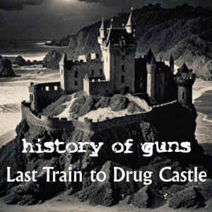

All aboard, all aboard - the last train to the ultimate party. The pubs are closed, but you’re not ready for bed. You want to go to a party in this mad building on the beach? Who are you going to trust to take you to the final destination?
"The remix is inspired partly by KLF’s “Last Train to Trancentral” and partly by those late-night adventures after the pub closes, going on potentially somewhere exciting, potentially somewhere dangerous."